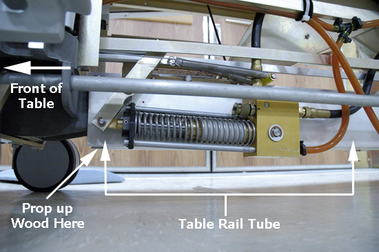

Illustration 4: Positioning Block of Wood at Front of Table

Illustration 4: Positioning Block of Wood at Front of Table
Illustration 5: Positioning Block of Wood at Rear of Table

| NOTE: | You must raise either the front or rear base at least 2.5 inches off the floor to establish enough clearance to remove a caster. Therefore, the block of wood you choose must have a thickness of at least 6.5 inches, based on using the recommended “raise” points in Illustrations 4 and 5. |
| NOTE: | VERY IMPORTANT! When you remove the collar from the caster shaft, place a mark on the bottom of the collar for easy identification. It is possible to put the collar back onto the caster shaft upside down, thus ensuring that the collar bolt hole will never match up with the bolt hole on the bottom of the caster base assembly. |